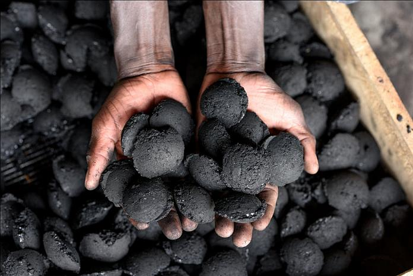

CONSTRUISONS ENSEMBLE UN AVENIR DURABLE
Des solutions innovantes de charbon écologique pour répondre aux défis énergétiques à Maroua, Extrême-Nord.

L'EXPERTISE AU SERVICE DE L'ENVIRONNEMENT
Plus de 4 ans d'expérience dans la conception d'équipements thermiques performants à Maroua.

UN IMPACT DURABLE POUR NOTRE COMMUNAUTÉ
Charbon écologique TchGreen : des solutions locales pour une transition énergétique responsable au Cameroun.